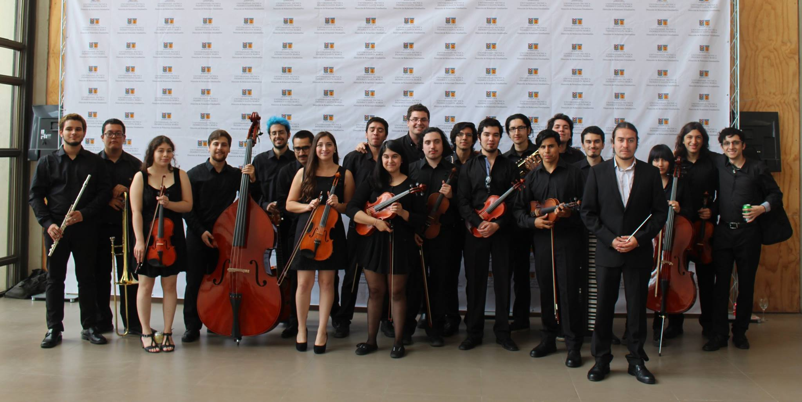
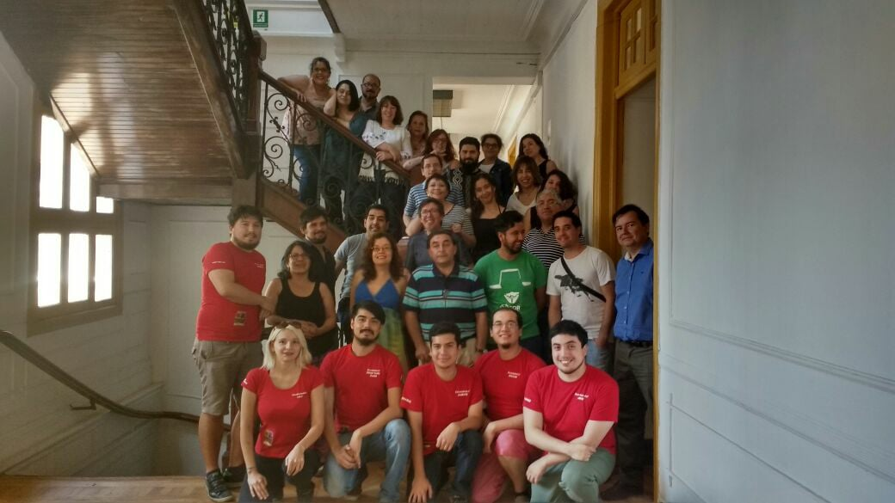

Fui miembro de una orquesta sínfonica durante mis años de estudio, jefe de fila de segundos violines.
He participado en eventos para enseñar a la gente a jugar y fui miembro de una organización que se encargaba de enseñar también a jugar Juegos de Rol a estudiantes de Magíster en Pedagogía en la Academia de Humanismo Cristiano, con la intención de fomentar en los jóvenes la resolución de problemas y el manejo apropiado de recursos.
En especial del manga y el animé y pasatiempos derivados.